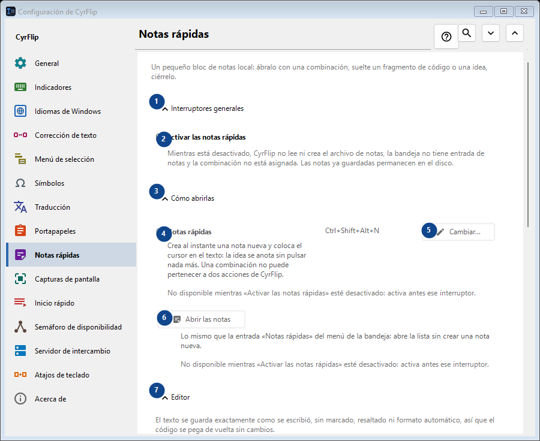
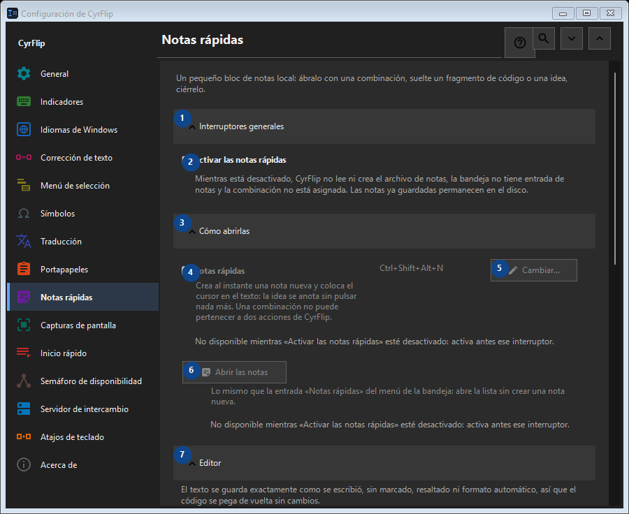

Notas rápidas
Para qué sirve
Un pequeño bloc de notas local: ábralo con una combinación, suelte un fragmento de código o una idea, ciérrelo.


Orden de uso
Los ajustes se aplican de inmediato. No hay un orden obligatorio; usa los grupos siguientes.
Elementos
1. Interruptores generales
Usa este comando para la acción indicada. Lee cualquier confirmación antes de aceptarla.
Tus atajos2. Activar las notas rápidas
Mientras está desactivado, CyrFlip no lee ni crea el archivo de notas, la bandeja no tiene entrada de notas y la combinación no está asignada. Las notas ya guardadas permanecen en el disco.
Tus atajos3. Cómo abrirlas
Usa este comando para la acción indicada. Lee cualquier confirmación antes de aceptarla.
Tus atajos4. Notas rápidas
No disponible mientras «Activar las notas rápidas» esté desactivado: activa antes ese interruptor. Este elemento no está disponible. Activa primero la función o selecciona una entrada.
Tus atajos5. Cambiar - Notas rápidas
No disponible mientras «Activar las notas rápidas» esté desactivado: activa antes ese interruptor. Este elemento no está disponible. Activa primero la función o selecciona una entrada.
Tus atajos6. Abrir las notas
No disponible mientras «Activar las notas rápidas» esté desactivado: activa antes ese interruptor. Este elemento no está disponible. Activa primero la función o selecciona una entrada.
Tus atajos7. Editor
Usa este comando para la acción indicada. Lee cualquier confirmación antes de aceptarla.
Tus atajos8. Ajustar las líneas largas en el editor
No disponible mientras «Activar las notas rápidas» esté desactivado: activa antes ese interruptor. Este elemento no está disponible. Activa primero la función o selecciona una entrada.
Tus atajos9. Exportación y almacenamiento
Usa este comando para la acción indicada. Lee cualquier confirmación antes de aceptarla.
Tus atajos10. Añadir las fechas al exportar
No disponible mientras «Activar las notas rápidas» esté desactivado: activa antes ese interruptor. Este elemento no está disponible. Activa primero la función o selecciona una entrada.
Tus atajos11. Exportar todas las notas a Markdown...
No disponible mientras «Activar las notas rápidas» esté desactivado: activa antes ese interruptor. Este elemento no está disponible. Activa primero la función o selecciona una entrada.
Tus atajos12. Eliminar todas las notas rápidas
No disponible mientras «Activar las notas rápidas» esté desactivado: activa antes ese interruptor. Este elemento no está disponible. Activa primero la función o selecciona una entrada.
Tus atajos13. Traslado a otro equipo
Usa este comando para la acción indicada. Lee cualquier confirmación antes de aceptarla.
Tus atajos14. Exportar...
Un único archivo de texto abierto con las notas y el historial del portapapeles que elijas: se lee en cualquier editor o en el teléfono y se importa en CyrFlip en otro equipo. El archivo no se cifra. La importación muestra lo que se añadirá y no elimina nada.
Tus atajos15. Importar...
Usa este comando para la acción indicada. Lee cualquier confirmación antes de aceptarla.
Tus atajos